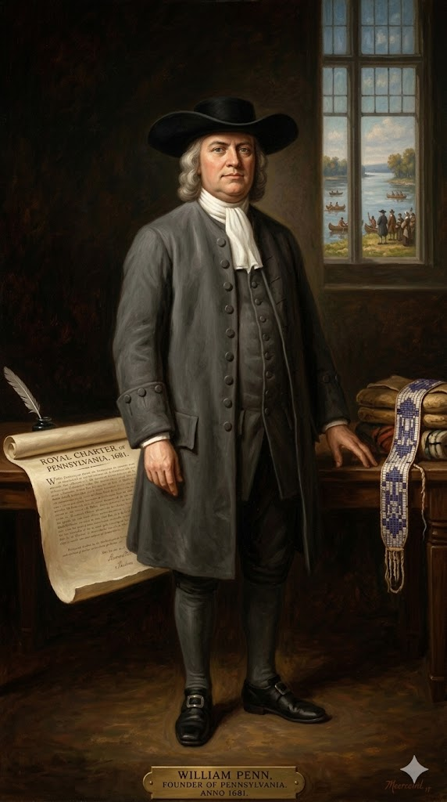
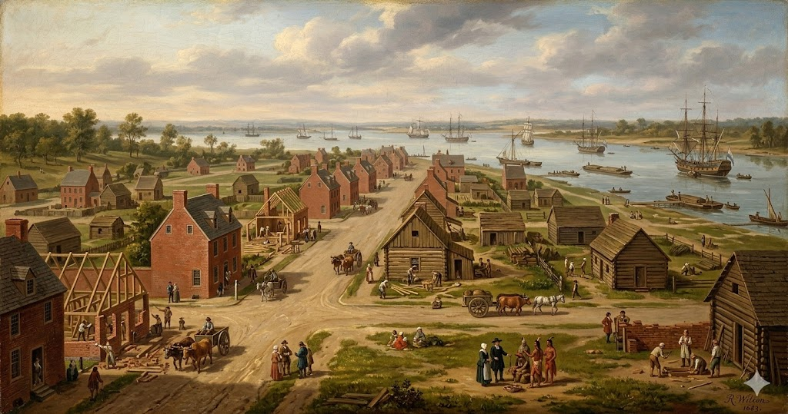

1. שנות פעילות, הקמה ויעדים
שנת הקמה: הזיכיון המלכותי נחתם ב-4 במרץ 1681.
ישות מקימה: מושבה קניינית (Proprietary colony). פנסילבניה הוענקה בשלמותה לאדם אחד בלבד - ויליאם פן. המלך צ'ארלס השני העניק לו את השטח העצום (בגודל של אנגליה כולה) כדי למחוק חוב כספי עצום (16,000 ליש"ט) שהמלוכה הייתה חייבת לאביו המנוח של פן, האדמירל סר ויליאם פן.
היעדים המקוריים: המטרה של המלך הייתה להיפטר מחוב כספי גדול ועל הדרך להרחיק את הקווייקרים ה"מעצבנים" והאנטי-ממסדיים מאנגליה. אולם, היעד של ויליאם פן היה הקמת "ניסוי קדוש" (The Holy Experiment): חברה אוטופית שבה יוכלו הקווייקרים וכל הנרדפים בעולם לחיות בחופש דת מוחלט, בשלום עם הילידים, ועדיין לשגשג כלכלית (פן היה גם איש עסקים ממולח ששיווק את אדמותיו החדשות ברחבי אירופה).
2. רקע המייסד: ויליאם פן

ויליאם פן (William Penn) (1644–1718)
ילדות ורקע: נולד בלונדון למשפחת אצולה עשירה ומקושרת מאוד. אביו היה אדמירל מהולל בצי הבריטי שניצח בקרבות ימיים רבים. ויליאם הצעיר קיבל את החינוך הטוב ביותר שניתן לקבל, אך בהיותו סטודנט באוניברסיטת אוקספורד נחשף להטפות של תנועה נוצרית רדיקלית וחדשה - אגודת הידידים (הקווייקרים).
משבר אמוני ומרד: בגיל 22, למורת רוחו העצומה של אביו, פן המיר את דתו והפך לקווייקר אדוק. הוא גורש מהאוניברסיטה, נזרק מביתו על ידי אביו, וישב בכלא הבריטי (במצודת לונדון) מספר פעמים בגין "כפירה" והפצת עלונים אנטי-ממסדיים. בכלא הוא כתב את חיבוריו התיאולוגיים המפורסמים ביותר הדורשים חופש מצפון.
הישגים: פן הקים את פנסילבניה על בסיס נדיר של צדק. הוא התעקש לרכוש את האדמות מהאינדיאנים בתשלום הוגן (למרות שהמלך כבר נתן לו אותן בחינם), חוקק את "מסגרת הממשל" (Frame of Government) שהבטיחה זכויות דמוקרטיות ומשפט מושבעים, ותכנן באופן אישי את רחובותיה של פילדלפיה. הוא עזב את אמריקה ב-1701 וחזר לאנגליה, שם הסתבך בחובות כבדים ומת חסר כל, אך מורשתו הדמוקרטית עיצבה את חוקת ארה"ב מאה שנים מאוחר יותר.
3. אידאולוגיה: קווייקריזם ו"הניסוי הקדוש"
פנסילבניה הייתה ההתגשמות הפוליטית של האידאולוגיה הקווייקרית, שהייתה רדיקלית ומאירת עיניים לחלוטין לזמנה:
- שוויון ו"האור הפנימי": הקווייקרים האמינו שלכל בן אנוש יש "אור פנימי" אלוהי, ולכן כולם שווים – גברים ונשים, עשירים ועניים, לבנים ואינדיאנים. הם סירבו להסיר את כובעיהם בפני אצילים, מה שקומם עליהם את רשויות החוק באנגליה ובמסצ'וסטס. בפנסילבניה, שוויון זה תורגם ליחסים הוגנים עם שבטי הלנאפה (תחת הנהגתו של הצ'יף טאמננד).
- פציפיזם: הקווייקרים התנגדו לכל סוג של אלימות או מלחמה. פנסילבניה הייתה המושבה היחידה באמריקה שלא החזיקה מיליציה צבאית ממוסדת בעשורים הראשונים להקמתה, והסתמכה לחלוטין על כוחה של הדיפלומטיה להגנתה.
- חופש דת אמיתי: בניגוד לסובלנות המסחרית הקרה של ניו יורק, פנסילבניה אימצה חופש דת כעיקרון קדוש. כל אדם שהאמין באל אחד יכול היה לחיות בה ללא רדיפה, מה שהפך אותה לאבן שואבת לכתות נוצריות מכל רחבי אירופה ולקהילה יהודית משגשגת בפילדלפיה.
4. גיאוגרפיה ותכנון ערים: פילדלפיה

הגיאוגרפיה של פנסילבניה שילבה גישה אוקיינית עם עורף יבשתי פורה ועצום:
- הידרולוגיה - נהר הדלאוור והשווילקיל: העיר פילדלפיה הוקמה במיקום אסטרטגי מושלם: נקודת המפגש של נהר הדלאוור הרחב (המאפשר עגינת ספינות אוקיינוס גדולות) ונהר שווילקיל (Schuylkill River) החודר אל תוך היבשת. נתיב זה איפשר העברת תוצרת חקלאית מפנים הארץ היישר אל הנמל בקלות.
- תכנון "עיר הרשת" (The Grid): ויליאם פן היה טראומטי מהשריפה הגדולה של לונדון (1666) ומהמגפות שהשתוללו בסמטאות הצפופות שלה. לכן, הוא תכנן את פילדלפיה כעיר רשת מרובעת – הראשונה באמריקה – עם רחובות ישרים ורחבים, כיכרות ציבוריות מרווחות (כמו כיכר וושינגטון של ימינו), וחלקות אדמה גדולות שנועדו לאפשר לכל בית לטפח גינה. הוא קרא לזה תוכנית "העיר הירוקה" (Greene Country Towne).
5. כלכלה: סל הלחם ומעצמת סחר
ההצלחה הכלכלית של פנסילבניה הייתה המהירה ביותר מכל 13 המושבות, בזכות השילוב של אדמה טובה, שלום יציב עם הילידים (שחסך הוצאות צבאיות עצומות) והגירה של אנשי עבודה מיומנים מאירופה:
- מושבת סל הלחם (Breadbasket): העורף החקלאי העצום של פנסילבניה, שעובד על ידי חקלאים גרמנים חרוצים, הפיק כמויות אדירות של חיטה, שעורה, תירס ושיפון. הקמח של פנסילבניה יוצא לכל רחבי העולם והאכיל את מושבות הדרום ואת מטעי הסוכר בקריביים.
- הזינוק של פילדלפיה: פילדלפיה הפכה לנמל הפעיל והעשיר ביותר באמריקה. היא התפתחה במהירות מסחררת כמרכז של מסחר חופשי, בנקאות, תעשיית עץ, דפוס ותעשייה זעירה. עד אמצע המאה ה-18, פילדלפיה עקפה את בוסטון והפכה לעיר הגדולה והחשובה ביותר באמריקה הבריטית (והשנייה בגודלה באימפריה הבריטית כולה, מיד אחרי לונדון).
6. דמוגרפיה: פסיפס אנושי והתנגדות לעבדות
השיווק האגרסיבי והחכם של ויליאם פן ברחבי אירופה הפך את פנסילבניה למרכז הדמוגרפי המגוון והצומח ביותר באמריקה:
- ההגירה הגרמנית והסקוטית-אירית: לצד הקווייקרים האנגלים, פנסילבניה קלטה רבבות מהגרים דוברי גרמנית מכתות פציפיסטיות (כגון האמיש, והמנוניטים) שברחו ממלחמות באירופה. הם נודעו בטעות לשונית היסטורית כ-"Pennsylvania Dutch" (בגלל עיוות המילה הגרמנית Deutsch). בנוסף, הגיעו גלי הגירה עצומים של סקוטים-אירים (Scots-Irish) שיישבו את אזורי הספר ההרריים והיו קשוחים ופחות פציפיסטיים.
- התנגדות ראשונית לעבדות (1688): למרות שחלק מהמתיישבים (אפילו ויליאם פן לתקופה מסוימת) החזיקו עבדים אפריקאים ככוח עזר בחוות ובנמל, פנסילבניה הייתה המקום הראשון באמריקה שבו קמה התנגדות מוסרית ממוסדת לכך. ב-1688, קבוצת קווייקרים ומנוניטים בעיירה ג'רמנטאון (Germantown) כתבו וחתמו על העצומה הרשמית הראשונה באמריקה נגד העבדות, בטענה שהיא נוגדת את מצוות ה"אור הפנימי" ואת זכויות האדם הבסיסיות.
7. מאבקי השליטה: מעצר, הפקעה ומלחמות גבול
פנסילבניה המושבה השלווה לא הייתה חסינה ממשברים אימפריאליים, וחוותה שתי טלטלות שליטה דרמטיות שכמעט וחיסלו אותה:
א. הפקעת המושבה על ידי הכתר (1692–1694)
- מועד: 1692 עד 1694.
- אישים בולטים: המלך ויליאם השלישי והמלכה מרי (שתפסו את השלטון ב"מהפכה המהוללת"), וויליאם פן (שנעצר).
- סיבת ההשתלטות: ויליאם פן היה חבר קרוב ונאמן של המלך הקתולי המודח, ג'יימס השני (שהעניק לו את הזיכיון המקורי). כאשר המלכים החדשים (הפרוטסטנטים) עלו לשלטון, הם חשדו שפן בוגד בהם וזומם להחזיר את ג'יימס לכס המלוכה. פן נעצר ונכלא באנגליה, הזיכיון שלו בוטל, ופנסילבניה הועברה לשליטתו של בנימין פלצ'ר, מושל ניו יורק מטעם הכתר הבריטי. לאחר שנתיים ארוכות, כשהוכח סופית שפן חף מפשע ואינו בוגד, המושבה הוחזרה לבעלותו המלאה ב-1694.
ב. מאבק הגבולות וקו מייסון-דיקסון
- מהות המאבק (מלחמת קרסאפ): הזיכיון של פנסילבניה חפף בטעות גיאוגרפית לחלק מהזיכיון של מרילנד השכנה (שנשלטה על ידי משפחת קלברט הקתולית). הסכסוך החמיר בשנות ה-30 של המאה ה-18 כאשר מתיישבים משתי המושבות החלו להילחם פיזית על אדמות, לשרוף חוות ולגבות מיסים כפולים אחד מהשני (אירועים אלימים שכונו "Cresap's War").
- הפתרון המדעי: כדי למנוע מלחמה כוללת, שתי המשפחות (משפחת פן ומשפחת קלברט) שכרו את שירותיהם של שני אסטרונומים ומודדים בריטים, צ'ארלס מייסון וג'רמיה דיקסון. בין השנים 1763 ל-1767, הם סימנו באופן מדעי את הגבול המדויק. גבול זה נודע לעד כ-"קו מייסון-דיקסון" (Mason-Dixon Line), שלימים הפך לקו ההפרדה התרבותי והחוקי בין ה"צפון" (החופשי מעבדות) ל"דרום" (מדינות העבדות) בארצות הברית.
8. מחקר אטימולוגי: Penn's Woods ועיר אהבת האחים
Penn (פן)
מקור: קלטית עתיקה / וולשית
המשמעות הקלטית המקורית (Pen) היא "ראש", "פסגה" או "גבעה". בהקשר המושבה, זהו כמובן שם המשפחה של המייסד.
אנקדוטה היסטורית מרתקת: ויליאם פן עצמו הציע לקרוא למקום רק "ניו ויילס" או "סילבניה". המלך צ'ארלס התעקש על "פנסילבניה" כהוקרה לאדמירל פן (אביו של ויליאם). ויליאם פן, הקווייקר הצנוע שסלד מיהירות, פחד שיחשבו שהוא קורא למושבה על שמו שלו מתוך אגו. הוא למעשה ניסה לשחד ב-20 גינאה את מזכיר המלך כדי שימחק את המילה "פן" ממסמכי הזיכיון, אך המזכיר סירב.
-sylvania (סילבניה)
מקור: לטינית עתיקהנגזר מהמילה הלטינית Silva שמשמעותה "יער" או "חורש". הלחם השם המלא שיצר המלך הוא: "היערות של פן" (Penn's Woods).
Philadelphia (פילדלפיה)
המייסד ויליאם פן נתן לעיר הבירה שלו את השם בעצמו. השם מורכב משתי מילים ביוונית עתיקה:
1. Philos (פילוס): אהבה עמוקה / חיבה / חברות (כמו במונח פילוסופיה - אהבת החוכמה).
2. Adelphos (אדלפוס): אח.
המשמעות המלאה של שם העיר היא: "עיר אהבת האחים" (The City of Brotherly Love). שם זה משקף לחלוטין את האידאולוגיה הקווייקרית של שלום, שוויון ואחווה אוניברסלית שאותה ייעד פן לעירו המתוכננת, ושהפכה למופת של חברה משגשגת ללא שפיכות דמים.